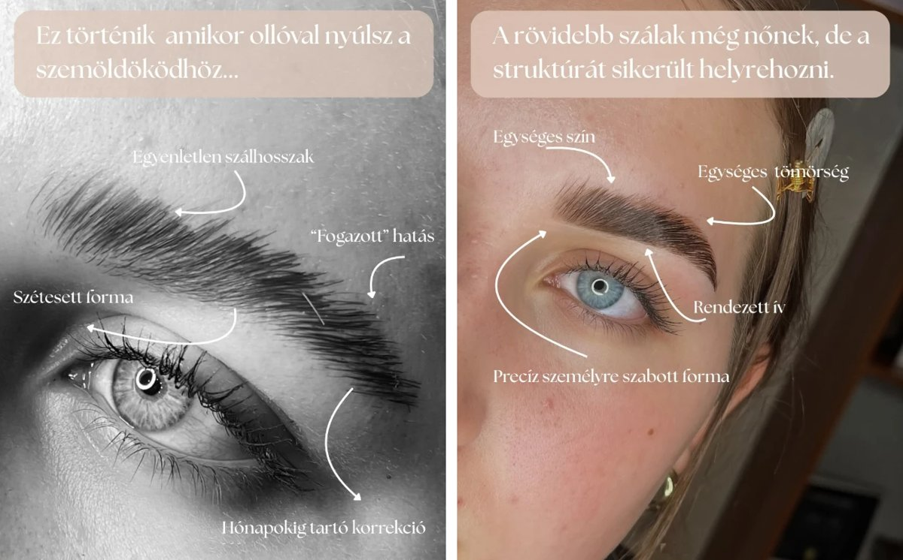

Egy apró hiba, és hetekig bánhatod! Íme egy szemöldök stylist tanácsai.

Sokan próbálják otthon „rendezettebbé” tenni a szemöldöküket egy kis ollóval. De amit kevesen tudnak: a szemöldök szálait vágni csak végső esetben, és nagyon tudatosan szabad, ha egyáltalán!
A szemöldökszál a gyökérnél vastagabb, a vége felé viszont finoman elvékonyodik, ez adja a természetes, puha hatását. Amikor levágod a végét, egy hirtelen, éles végű „tuskó” marad, ami vastagabbnak és durvábbnak tűnik. Ez nemcsak esztétikailag zavaró, de a szálak könnyebben ki is állnak, nem fekszenek szépen a bőrre.
Emellett:
Sokan próbálják otthon „igazítani” a forma hibáit, például ollóval, de ez sajnos könnyen egyenetlen szálhosszakhoz, szétesett formához és hosszan tartó korrekcióhoz vezethet.
Néha bizony kihívást jelentő szemöldökökkel is találkozom a szalonban, és ez teljesen rendben van. A fenti bal oldali képen pontosan ez történt: a vendég saját maga vágott bele a szemöldökébe, így a szálak töredezettek és kuszák lettek. Jellemző jelek:
Szakértő kezekkel még ilyen helyzetekből is nagyon szép eredményt lehet kihozni. A jobb oldali képen már rendezett ív, egységes szín és tömörség, valamint precíz, személyre szabott forma látható, még úgy is, hogy néhány szálnak idő kell, míg visszanő. A rövidebb szálak még nőnek, de a struktúrát sikerült helyrehozni.
A szemöldökformázás nem az ollóról szól, hanem az irányba fésülésről, rögzítésről és precíz igazításról. Egy jól kivitelezett styling során a szálakat megfelelő technikával rendezzük el, és ha vágásra kerül a sor, azt is a megfelelő szögben, minimálisan, kontrolláltan végezzük el.
A kevesebb több, főleg ollóval!
Ha bizonytalan vagy, inkább kérj segítséget egy szemöldök stylisttól: a természetes, szép végeredmény sokkal többet ér, mint egy otthoni kísérlet. Így mindig a legszebb, arcodhoz illő eredményt kapod.
Részletek: Szemöldök styling · Árak és csomagok